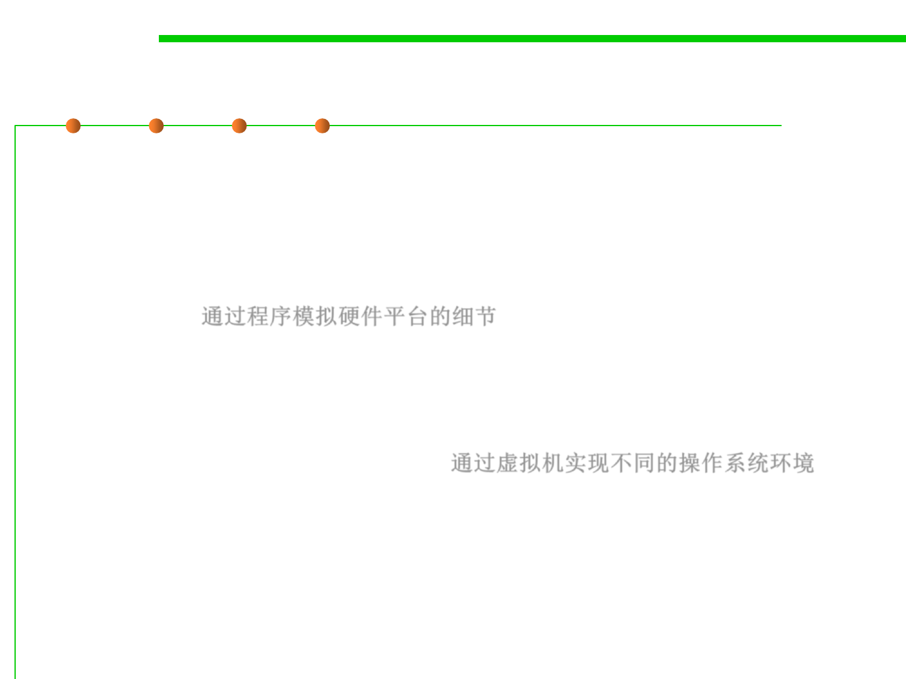

(2) Controlling the Environment
7.4 Debugging
▪ Two things have helped immeasurably with this issue.
– The first is hardware abstraction—some hardware in your computer
might significantly affect your software’s behavior, such as gaming.
Hardware abstractions are sets of routines in software that emulate some
platform-specific details, giving programs direct access to the hardware
resources. 通过程序模拟硬件平台的细节
– The second is virtual machines—it’s now possible to run many different
operating systems and configurations on a single computer
simultaneously, with very little effort indeed. This is of obvious use if
you’re working on cross-platform software, but it can also be helpful in a
wide range of other circumstances. 通过虚拟机实现不同的操作系统环境
– E.g., in web software, a wide range of different browsers(probably several
different versions of each) need to be supported. Having a number of
different virtual machines available, each configured with a different
operating system and browser combination.